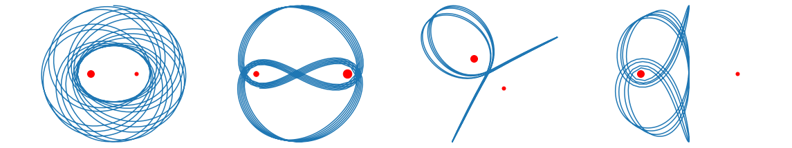

Mathematical Python

Mathematical Python is an introduction to mathematical computing including:
- Jupyter notebooks, markdown and $\LaTeX$
- Basic Python programming: datatypes, variables, logic, loops and functions
- Scientific computing with NumPy, SciPy and Matplotlib
- Applications in calculus, linear algebra and differential equations
Prerequisites
We assume the reader has completed undergraduate courses in:
- Differential calculus: derivatives, Taylor series and optimization
- Integral calculus: integrals, Riemann sums, sequences and series
- Linear algebra: vector and matrix operations, systems of equations, eigenvalues and eigenvectors
- Differential equations: first and second order equations, Euler's method and systems of equations
Author
Patrick Walls is Associate Professor of Teaching in the Department of Mathematics at the University of British Columbia.
Feedback
Comments and suggestions are always welcome! Please contact Patrick Walls, make a pull request to the GitHub repo or share your thoughts in the Google form.
Acknowledgements
Thank you ...
- Pacific Institute for the Mathematical Science (PIMS) for creating Syzygy and hosting Jupyter notebooks for thousands of students and researchers across Canada
- Jupyter, Python and SciPy developers for creating open source scientific software
- MkDocs developers and Martin Donath for creating a Material Design theme for MkDocs
License

This work is licensed under a Creative Commons Attribution-NonCommercial-ShareAlike 4.0 International License.
Last Modified
August 16 2022 14:12 PST